由于对称矩阵的结构性质,其特征值问题在数值线性代数中有许多漂亮的算法.除迭代可以应用于对称特征值问题外,还有Jacobi迭代以及与SVD直接相关的三对角方法.
 对称算法
对称算法
将迭代的思想结合矩阵的对称性质可以得到对称算法.其导出思路可以简述如下:
用于求最大特征值及特征向量的幂法和用于求不变子空间的迭代分别以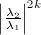和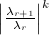的方式收敛到相应特征向量和不变子空间.这引导我们考虑迭代,这相当于的正交迭代.
我们考察对称迭代的加速算法.首先通过一系列Householder变换 使得是三对角阵,从而将之后每步迭代的运算量降至个flop,而三对角化这一步骤约需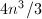个flop.其次,应用位移思想,可使收敛到对角形的速率为立方收敛.我们着重分析位移思想.
使得是三对角阵,从而将之后每步迭代的运算量降至个flop,而三对角化这一步骤约需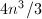个flop.其次,应用位移思想,可使收敛到对角形的速率为立方收敛.我们着重分析位移思想.
若 是一个近似特征值,则我们期望用位移进行一次迭代后,元会很小.若
由Gerschgorin定理,位移的一个合理选择是,而一个更有效的选择是用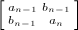靠近的特征值作位移,这称为Wilkinson位移,它由
给出,其中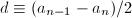.Wilkinson[1]证明了以上两种位移策略都是立方收敛,并给出了理由为什么更偏好后者.
是一个近似特征值,则我们期望用位移进行一次迭代后,元会很小.若
由Gerschgorin定理,位移的一个合理选择是,而一个更有效的选择是用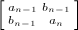靠近的特征值作位移,这称为Wilkinson位移,它由
给出,其中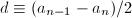.Wilkinson[1]证明了以上两种位移策略都是立方收敛,并给出了理由为什么更偏好后者.
应用隐式Q定理,不必显式形成矩阵就能实现从 到的变换,这在
到的变换,这在 远大于某个
远大于某个 时有优点.
时有优点.
首先取
使得
则
再计算使得满足且是三对角阵,就可以应用隐式Q定理.而实际中,我们使
则和 的第一列相等且可用于将多余的非零元素逐出矩阵.这样就完成了到的变换,从而完成了对称算法的一个步骤.
的第一列相等且可用于将多余的非零元素逐出矩阵.这样就完成了到的变换,从而完成了对称算法的一个步骤.
Jacobi方法
求解对称特征值问题的Jacobi迭代法因易于并行化而引起人们的注意.它通过进行一系列正交相似变换 逐步减小 我们可以形象地称为非对角元素的Frobenius范数.实现它的工具是Jacobi-Givens旋转变换.
Jacobi方法的基本步骤:
- 选择指标,在经典Jacobi算法中选择使最大.
- 计算一个余弦-正弦对,使得 为对角阵.
- 令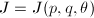,计算并覆盖
 .
.
容易得到,经过一次Jacobi步骤后,
在此意义下,每个Jacobi步骤后更"靠近"对角形.
经典Jacobi方法(选取最大)的每次校正要做次运算,但选取最大元素却需 次比较.解决此矛盾的途径是将变换顺序固定下来,如逐行进行"扫描",这称为行循环方法,它是二次收敛的.作为对比，算法是立方收敛的.
次比较.解决此矛盾的途径是将变换顺序固定下来,如逐行进行"扫描",这称为行循环方法,它是二次收敛的.作为对比，算法是立方收敛的.
如前所述,Jacobi方法的优势在于其并行本性.事实上,Jacobi旋转只作用于 ,
, 行和,列.这样,每次将矩阵的全部行与列划分为若干互不冲突的组,每组的运算可以得到并行的处理.各族变换并行处理完成后,变换行与列的划分(类似一次循环赛的过程),直至所有对都得到处理.这种并行的思想也同样适用于分块的Jacobi迭代.
行和,列.这样,每次将矩阵的全部行与列划分为若干互不冲突的组,每组的运算可以得到并行的处理.各族变换并行处理完成后,变换行与列的划分(类似一次循环赛的过程),直至所有对都得到处理.这种并行的思想也同样适用于分块的Jacobi迭代.
对称三对角矩阵的特征值方法
Sturm序列与二分法
令表示 的
的 阶顺序主子阵,定义其特征多项式,则有以下递推公式(设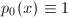):
因通过次运算即可计算
阶顺序主子阵,定义其特征多项式,则有以下递推公式(设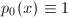):
因通过次运算即可计算 的值,故利用二分法找它的根是可行的.显然,二分迭代是线性收敛,即每步将误差减半.
的值,故利用二分法找它的根是可行的.显然,二分迭代是线性收敛,即每步将误差减半.
对于不可约三对角阵,有如下经典结果,其证明可参见[2].
 如上定义,且约定若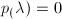,则与反号.
如上定义,且约定若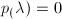,则与反号.结合Gerschgorin定理可知.其中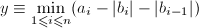,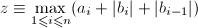.于是我们可以此为初始值,进行二分法迭代,每次迭代的判断条件为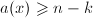,则可求出的第 大的特征值.
大的特征值.
与迭代相比,对分法的优势在于无论特征值大小,计算值都具有小的相对误差.
分而治之方法
适合于并行处理的三对角阵特征值算法是以以下观察为基础的:设 ,定义
则
除了"中间四个"元素
与相等.若取,则
,定义
则
除了"中间四个"元素
与相等.若取,则
 其中,
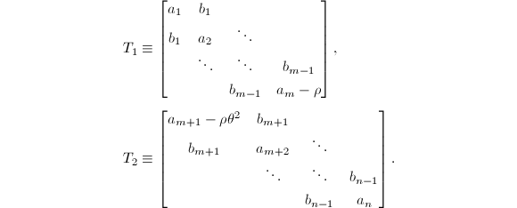这样,我们就把"撕"成了两片,并加上一个修正项.分别解决,的特征值问题
后,只要快速求解一个对角矩阵向量外积修正的特征值问题
就可以了.
其中,
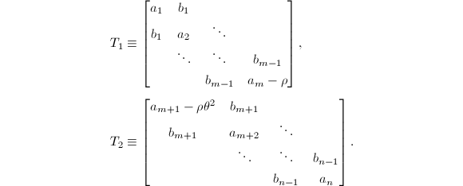这样,我们就把"撕"成了两片,并加上一个修正项.分别解决,的特征值问题
后,只要快速求解一个对角矩阵向量外积修正的特征值问题
就可以了.
对角矩阵向量外积修正的特征值问题的主要计算依赖于以下结果:
![$V=[v_1,\cdots,v_n]$](latex/latex2png-SymmetricEigenvalueProblem_223557911_-5.gif) .则
.则
 是
的
是
的 个零解.
个零解.- 当0$" class="latex-inline" style="vertical-align: -4px" width="39" height="15">,则
 当,则
当,则

- 特殊向量
 是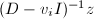的倍数.
是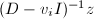的倍数.
上述定理表明要计算 ,我们应首先用Newton型算法找出
,我们应首先用Newton型算法找出 的根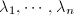,然后对
的根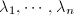,然后对 ,通过正规化向量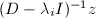来计算的列向量.
,通过正规化向量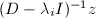来计算的列向量.
以下考察有重复的 或零分量
或零分量 的情形,我们对以下定理给出一个构造性的证明,从而解决问题:
的情形,我们对以下定理给出一个构造性的证明,从而解决问题:
 其中,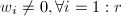而
其中,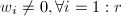而
- 假设对某个
 有,令是平面上的旋转变换,使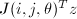的第
有,令是平面上的旋转变换,使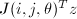的第 个分量为
个分量为 .易知
于是,若有一个重复的,我们就能使的一个分量化为.
.易知
于是,若有一个重复的,我们就能使的一个分量化为. - 令
 是
是 和列互换的单位阵,可推出是对角阵,这样我们就可将为零的放在底部.重复以上步骤就可得到所需的标准结构.
和列互换的单位阵,可推出是对角阵,这样我们就可将为零的放在底部.重复以上步骤就可得到所需的标准结构. 是这些旋转阵之积.
□
是这些旋转阵之积.
□
综合上述所述,我们就得到了分而治之算法.
计算SVD
矩阵的奇异值分解与对称阵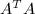,的Schur分解有着密切的联系.若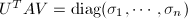是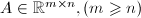的SVD,则
我们计算的SVD的思路就是将其化为的Schur分解来进行.但如果显式形成,则可能造成信息的损失.Golub和Kahan (1965)[3]给出了基于隐式对称算法的SVD方法.
首先用Householder变化将化为双对角形:
其中
接下来只要计算 的SVD.为此考虑三对角阵,应用算法:
的SVD.为此考虑三对角阵,应用算法:
- 计算矩阵
(其中)的靠近
 的特征值
的特征值 .
. - 计算和使得 令.
- 计算Givens旋转,使得当时,为三对角阵,且.
正如之前指出的,以上算法需显式计算,这可能导致算法的不稳定.若我们把Givens变化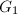直接作用到上,在决定Givens旋转将恢复为双对角阵,得到
由的形式可知
从而由隐式Q定理断言和本质相同.于是我们隐式地完成了到的过程.
由于以上本质上是对称迭代的方法,所以其收敛是三次的.实际中我们通过检测的小次对角元来决定何时将问题降阶或终止迭代.
Chan (1982)[4]对Golub和Kahan的算法进行了改进.通过合理安排运算顺序,在n$" class="latex-inline" style="vertical-align: -1px" width="47" height="10">时可以有效地减少运算量.
- 形成双对角矩阵时,先通过Householder变换,将上三角化:
其中为上三角阵.随后利用的上三角性质,利用Givens变换或快速Givens变换将其化为双对角形.由于R-双对角化时只需对较短的向量进行操作,而Givens变换较Householder变换可以减少加法的数目,特别在不需要求变换矩阵时可以有效地减少运算量.当时尤其有效.
- 当求得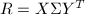之后,SVD的变换矩阵可如下求出:
Chan给出了算法复杂度的详细分析.他指出在时,R-双对角化几乎总是比Golub-Kahan算法更快速,特别在不需显式求出变换矩阵的情况下.
设我们已求得 矩阵的奇异值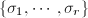,来考虑如何求正交矩阵,,使,其中.
矩阵的奇异值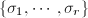,来考虑如何求正交矩阵,,使,其中.
事实上,我们已求得的特征值,要求正交矩阵,其列向量是的特征向量,我们只要用逆迭代求解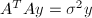 .实用中采用双对角矩阵代替,之后令的相应列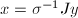即可.这些算法都是稳定有效的.
参考文献
[1]Global Convergence of Tridiagonal QR Algorithm With Origin Shifts, Lin. Alg. and Its Applic. I (1968), 409-420.
[2]The Algebraic Eigenvalue Problem, Clarendon Press, Oxford, UK, 1965.
[3]Calculating the Singular Values and Pseudo-Inverse of a Matrix, SIAM J. Num. Anal. Ser. B 2 (1965), 205-224.
[4]An Improved Algorithm for Computing the Singular Value Decomposition, ACM Trans. Math. Soft. 8 (1982), no.1, 72-83.